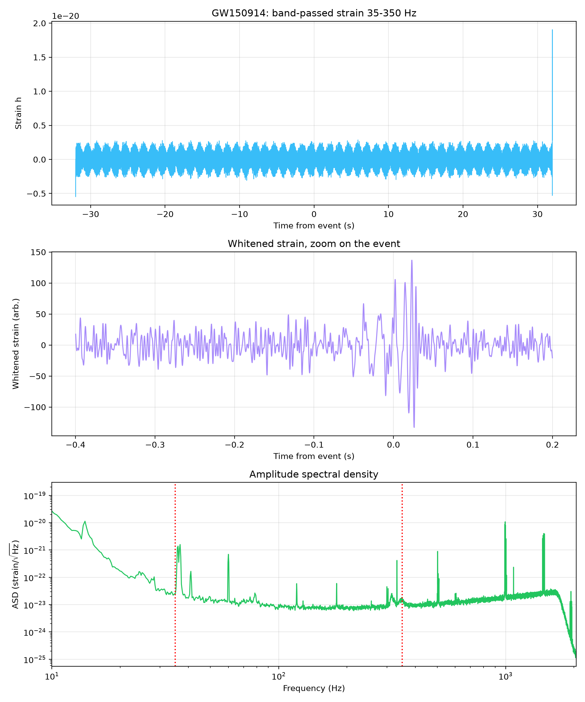
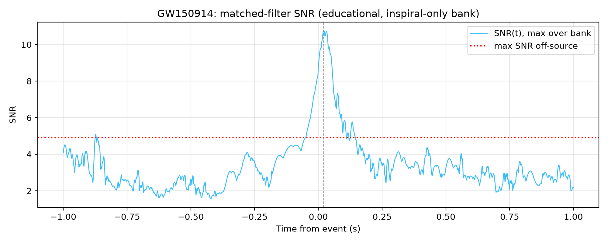
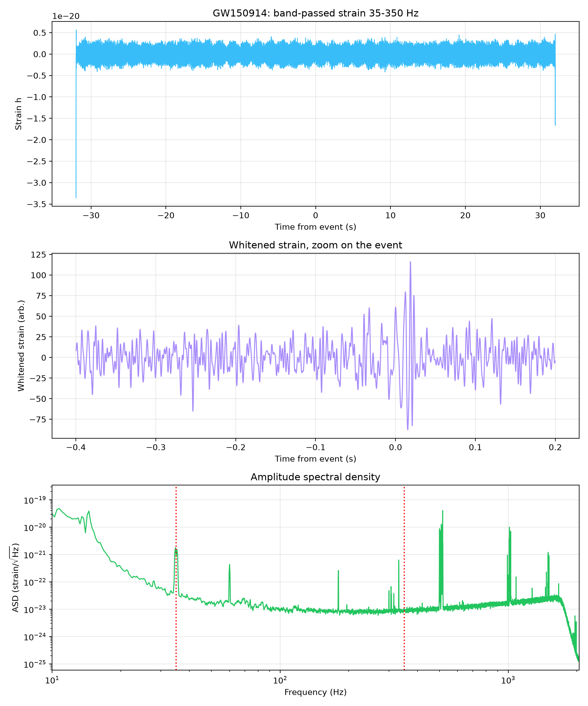
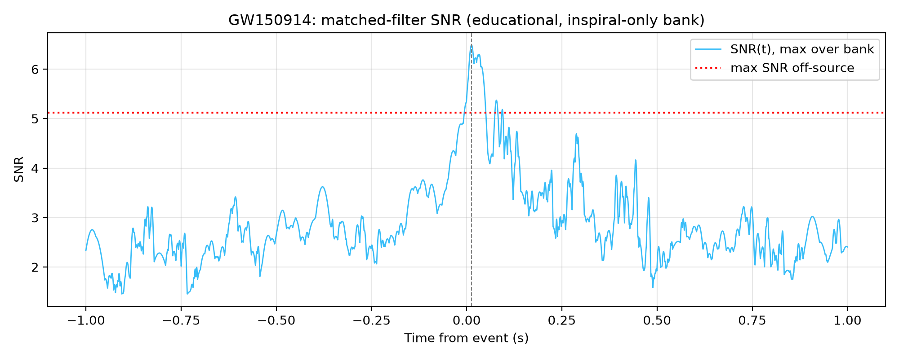

GW Analysis Toolkit
Análisis reproducible de datos abiertos de ondas gravitacionales (LIGO/Virgo/KAGRA) para consulta y para clase. Código en GitHub.
1. Resultados reales: GW150914
Datos de GWOSC (4096 Hz), 64 s centrados en el evento, ejecutados con
gw-analyze GW150914 --detector H1|L1 --matched-filter (versión 0.3.x).
| Detector | Significancia de exceso de potencia | Pico blanqueado | SNR filtro adaptado | Mayor SNR en el fondo |
|---|---|---|---|---|
| H1 | 18.1 σ | 8.1 σ | 10.8 | 4.9 |
| L1 | 7.5 σ | 6.9 σ | 6.5 | 5.1 |
El SNR del filtro adaptado usa plantillas solo de inspiral (cortadas en el ISCO), así que es una cota inferior: la suma en cuadratura (≈12.6) es aproximadamente la mitad del SNR de red publicado (~24). En L1 la separación respecto al fondo es modesta. No es una estimación de parámetros.




2. Demo interactiva (datos sintéticos)
matched_filter.py (plantillas TaylorF2 2PN, PSD de Welch con mediana, fondo en ventanas sin señal).
Cargando…
Calculando…
Prueba a poner el SNR en 0 (solo ruido): el filtro devuelve un máximo de ruido, comparable al del fondo, y la cota de falsa alarma no baja. Con SNR inyectado ≈ 5–8 el pico ya se acerca al fondo; por encima de ~10 se separa con claridad. Cambia la masa chirp y fíjate en la masa recuperada.
3. Reprodúcelo tú
python3 -m venv .venv && source .venv/bin/activate git clone https://github.com/amurlaniakea/gw-viz.git && cd gw-viz pip install -e ".[dev]" gw-analyze GW150914 --detector H1 --matched-filter
Para regenerar las figuras de esta página:
gw-analyze GW150914 --detector H1 --matched-filter --output-dir docs/img/H1 gw-analyze GW150914 --detector L1 --matched-filter --output-dir docs/img/L1
Metodología y limitaciones: METODOLOGIA.md. Prácticas para clase: AULA.md.